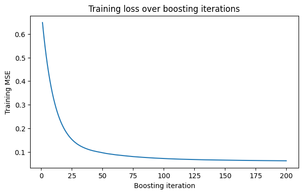
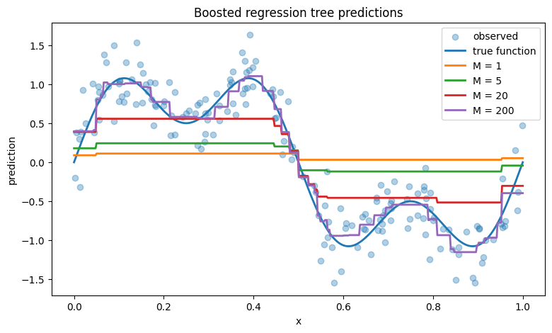
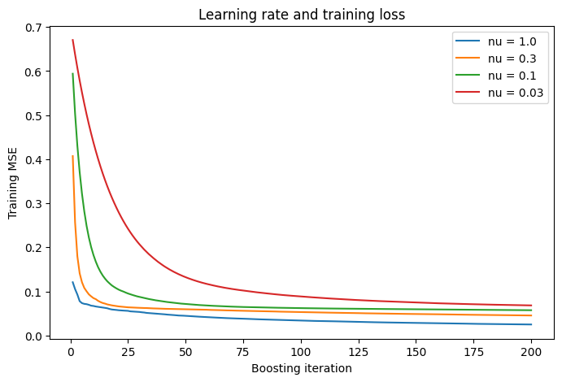

In the previous lectures, we studied CARTs, bagging, and random forests. A single tree is flexible but unstable. Bagging and random forests reduce this instability by averaging many trees that are fit in parallel.
Boosting takes a different approach. Instead of fitting many trees independently and averaging them, boosting fits trees sequentially.
Each new tree is chosen to improve the current model, given where the previous model did poorly.
A generic boosting method constructs a sequence of score functions
\[
\hat s_0,\hat s_1,\dots,\hat s_M.
\]
Each score function in our sequence is going to focus on where the previous did poorly and try to compensate. At step \(m\), we do this by fitting a new weak learner\(\hat h_m\) (somehow) focused on where \(\hat s_{m-1}\) did poorly, and then creating \(\hat s_m\) as:
for some learning rate\(\nu \in (0,1]\). Consequently, after \(M\) steps our boosted method will have the basic form of an additive score function. For regression this score is scalar:
with one score for each class. Each of these individual scores functions are built up sequentially also just like the regression function. The action function is then
To make things concrete, let’s first study the simplest boosting algorithm: boosted regression trees (for squared error loss). Assume we’re solving a regression problem. Our generic boosting algorithm is:
Fit \(\hat s_0\).
For \(m=1,\ldots,M\)
Determine where \(\hat s_{m-1}\) did poorly,
Fit \(\hat h_m\) to do well where \(\hat s_{m-1}\) didn’t,
For our concrete boosted regression trees, we first need a base method, let’s use the simple mean constant prediction:
\[
\hat s_0(x)=\bar y.
\]
Now, at iteration \(m\) we need to determine where \(\hat s_{m-1}\) did poorly. Let’s do this by calcualting the the current residuals of \(s_{m-1}\) compared to the training data:
\[
r_{nm}=y_n-\hat s_{m-1}(x_n).
\]
We’re then going to try and boost our current approach to compensate. We’ll do this by fitting a small regression tree \(\hat h_m\) to these residuals.
This is the basic boosted regression tree algorithm.
The learning rate \(\nu\) controls how fast we boost. It is (very) akin to the learning rate in a gradient descent. We don’t want to boost too quickly (over-fitting), we want a series of small steps. When \(\nu=1\), each tree’s fitted residual is added completely. When \(\nu\) is small, each tree only makes a small correction.
Small learning rates usually require larger \(M\), but they often improve test performance. The pair \((\nu,M)\) is therefore a regularization pair:
We will use DecisionTreeRegressor to fit each individual tree, but we will write the boosting loop directly.
This helps separate two ideas:
CART tells us how to fit one tree.
Boosting tells us how to combine many trees sequentially.
Show code
class SimpleBoostedRegressionTrees:def__init__(self, n_estimators=100, learning_rate=0.1, max_depth=2, min_samples_leaf=5):self.n_estimators = n_estimatorsself.learning_rate = learning_rateself.max_depth = max_depthself.min_samples_leaf = min_samples_leafdef fit(self, X, y):self.init_ = np.mean(y)self.trees_ = []self.train_mse_ = [] current_pred = np.repeat(self.init_, len(y))for m inrange(self.n_estimators): residual = y - current_pred# fit tree to residuals tree = DecisionTreeRegressor( max_depth=self.max_depth, min_samples_leaf=self.min_samples_leaf, random_state=m ) tree.fit(X, residual)# update *for training only* update = tree.predict(X) current_pred = current_pred +self.learning_rate * updateself.trees_.append(tree)self.train_mse_.append(mean_squared_error(y, current_pred))returnselfdef predict(self, X, n_estimators=None):if n_estimators isNone: n_estimators =len(self.trees_) pred = np.repeat(self.init_, X.shape[0])for tree inself.trees_[:n_estimators]: pred = pred +self.learning_rate * tree.predict(X)return pred
Show code
boost = SimpleBoostedRegressionTrees( n_estimators=200, learning_rate=0.05, max_depth=2, min_samples_leaf=8)boost.fit(X, y)plt.figure(figsize=(7, 4))plt.plot(np.arange(1, len(boost.train_mse_) +1), boost.train_mse_)plt.xlabel("Boosting iteration")plt.ylabel("Training MSE")plt.title("Training loss over boosting iterations")plt.show()

Show code
plt.figure(figsize=(9, 5))plt.scatter(X[:, 0], y, alpha=0.35, label="observed")plt.plot(x_grid[:, 0], y_true_grid, linewidth=2, label="true function")for m in [1, 5, 20, 200]: plt.plot( x_grid[:, 0], boost.predict(x_grid, n_estimators=m), linewidth=2, label=f"M = {m}" )plt.xlabel("x")plt.ylabel("prediction")plt.title("Boosted regression tree predictions")plt.legend()plt.show()

24.3 Effect of the learning rate
The learning rate controls how quickly the model moves. To see this, we can fit the same boosted tree procedure with different values of \(\nu\).
Show code
learning_rates = [1.0, 0.3, 0.1, 0.03]histories = {}for nu in learning_rates: model = SimpleBoostedRegressionTrees( n_estimators=200, learning_rate=nu, max_depth=2, min_samples_leaf=8 ) model.fit(X, y) histories[nu] = model.train_mse_plt.figure(figsize=(8, 5))for nu, hist in histories.items(): plt.plot(np.arange(1, len(hist) +1), hist, label=f"nu = {nu}")plt.xlabel("Boosting iteration")plt.ylabel("Training MSE")plt.title("Learning rate and training loss")plt.legend()plt.show()

Large learning rates reduce training loss quickly. Small learning rates move more slowly, but the slower path is often better for test error.
In practice, boosted trees are usually tuned using a validation set or cross-validation. Common tuning parameters include:
\(M\): number of trees
\(\nu\): learning rate
tree depth or number of leaves
minimum leaf size
25 General gradient boosting
The squared error algorithm is a special case of a broader idea.
For squared error, we fit residuals:
\[
r_n^{(m)} = y_n-\hat s_{m-1}(x_n).
\]
But residuals are not the right object for every loss. For example, in classification, the outcome is categorical, so the idea of fitting ordinary residuals doesn’t make a lot of sense.
Gradient boosting generalizes the residual-fitting idea by replacing residuals with pseudo-residuals.
For a loss function \(\ell\), the empirical risk is
In parametric models, if \(s=s_w\) for some parameter vector \(w\), then we optimize \(\hat R(s)=\hat R(w)\) over \(w\). The most basic way we have done this is with gradient descent:
where \(\nu\) is the learning rate and \(\nabla_w \hat R(w_{m-1})\) is the gradient of \(\hat R\) with respect to \(w\), evaluated at the current parameter value.
Boosting is like gradient descent, but in function space.
In boosting, we think of minimizing over functions \(s\) directly. The current estimate is a function \(\hat s_{m-1}\), and we update it by adding another function \(\hat h_m\):
This is analogous to gradient descent, with \(\hat h_m\) playing the role of a negative gradient direction. The difference is that instead of taking steps in a finite-dimensional parameter space, we take steps in a function space. This is why gradient boosting is often described as gradient descent in function space.
The idea is to start with an initial guess \(\hat s_0\), then repeatedly approximate the negative functional derivative of \(\hat R(s)\) with respect to \(s\), evaluated at the current function \(s=\hat s_{m-1}\). The weak learner \(\hat h_m\) is fit to approximate this negative gradient direction (at the training points), and then we take a \(\nu\)-sized step in that direction.
In ordinary gradient descent, we minimize a function of parameters. For example, if the score function is \(s_w(x)\), then the empirical risk can be written as a function of \(w\):
The gradient tells us how \(\hat R(w)\) changes if we make a small change to the parameter vector \(w\). Then gradient descent moves \(w\) in the direction that most decreases the risk.
In gradient boosting, we take a different point of view. Instead of thinking of \(s\) as a function indexed by parameters \(w\), we think of \(s\) itself as the object we are changing. The empirical risk is now a function of a function:
An object that takes a function as input and returns a number is called a functional. Here, \(\hat R\) takes the score function \(s\) as input and returns the average loss on the training data.
So what does it mean to take a derivative with respect to a function?
The basic idea is the same as a directional derivative. In finite-dimensional calculus, if we have a function \(R(w)\) and move from \(w\) in the direction \(v\), we study
This tells us how quickly \(R\) changes if we take a small step in the direction \(v\). The gradient is the object whose inner product with \(v\) gives this directional derivative:
\[
\left. \frac{d}{d\epsilon} R(w+\epsilon v) \right|_{\epsilon=0}= \nabla_w R(w)^\top v.
\]
For a functional, the input is not a vector \(w\), but a function \(s\). So instead of perturbing \(w\) in the direction of a vector \(v\), we perturb \(s\) in the direction of another function \(g\). For a small number \(\epsilon\), define
\[
s_\epsilon(x)=s(x)+\epsilon g(x).
\]
This means that we are modifying the current score function \(s(x)\) by adding a small amount of the function \(g(x)\).
The directional derivative of the risk functional at \(s\) in the direction \(g\) is
The functional gradient is the object whose inner product with \(g\) gives this directional derivative. Symbolically, it is the analogue of \(\nabla_w R(w)\), but now the input being changed is the function \(s\), not a parameter vector \(w\). In our finite-sample setting, the risk only depends on the fitted values \(s(x_1),\ldots,s(x_N)\), so the relevant inner product becomes a finite sum over the training data, like a typical inner product. If we perturb \(s\) in the direction \(g\), then
measures how sensitive the loss is to the current score value \(s(x_n)\). The negative of this quantity gives the direction in which we would like to move the score value in order to reduce the loss:
They are the analogue of residuals for a general loss function. For squared error, they are exactly the usual residuals. For other losses, such as logistic loss, they are not ordinary residuals, but they still tell us the direction in which the current score should move at each training point.
In an idealized version of functional gradient descent, we would update the score values directly by
\[
s_m(x_n)=s_{m-1}(x_n)+\nu r_n^{(m)}.
\]
But this only defines updates at the training points. We need a function that can also make predictions at new values of \(x\).
Gradient boosting handles this by fitting a weak learner, usually a shallow regression tree, to the pseudo-residuals:
\[
\hat h_m(x_n) \approx r_n^{(m)}.
\]
Then the model is updated by adding this fitted function:
Thus, gradient boosting can be viewed as gradient descent in function space, with the weak learner \(\hat h_m\) serving as a smoothed, model-based approximation to the negative functional gradient.
25.2 Generic Gradient Boosting Algorithm
Notice how our previous discussion worked for any differentiable loss \(\ell\). This leads to the generic gradient boosting algorithm:
Input:
data \((x_n,y_n)_{n=1}^N\)
differentiable loss \(\ell(y,s)\)
weak learner class \(\mathcal{H}\) (e.g. small trees)
In a Jupyter environment, please rerun this cell to show the HTML representation or trust the notebook. On GitHub, the HTML representation is unable to render, please try loading this page with nbviewer.org.
Boosting can overfit, but the form of overfitting differs from a single deep tree.
The main regularization tools are:
28.0.1 Number of trees
\[
M.
\]
More trees create a more complex additive function. Early stopping chooses \(M\) using a validation set.
28.0.2 Learning rate
\[
\nu.
\]
Smaller learning rates slow the stagewise fitting path. They usually require larger \(M\).
28.0.3 Tree depth
The depth of each tree controls the complexity of each update. Shallow trees produce simpler corrections.
Depth also controls interaction order in a rough sense:
depth 1 trees capture main-effect style corrections
depth 2 trees can capture simple interactions
deeper trees can capture more complex interactions
28.0.4 Minimum leaf size
Larger minimum leaf sizes prevent highly local updates.
28.0.5 Subsampling
Some implementations fit each tree using a random subset of rows. This gives stochastic gradient boosting and can reduce variance.
29 Practical notes
29.0.1 Scaling
Boosted trees are usually not sensitive to monotone rescaling of individual features. A split such as
\[
x_j \le t
\]
has an equivalent split after changing units.
29.0.2 Categorical variables
Basic CART implementations often require categorical variables to be encoded numerically. Different boosting libraries handle categorical features differently.
29.0.3 Missing values
Basic sklearn trees require missing values to be handled before fitting. Some boosting implementations, including XGBoost-style methods, learn default directions for missing values.
29.0.4 Extrapolation
Boosted trees inherit the extrapolation limitations of trees. They usually do not extrapolate linearly outside the observed feature range.
30 Learning rate and early stopping on a real regression dataset
We now use the diabetes dataset to illustrate the interaction between learning rate and number of trees.
This is the main idea, but there is a useful refinement. In ordinary gradient descent, there are really two separate questions at each iteration.
First, what direction should we move?
\[
d_m=-\nabla R(w_{m-1}).
\]
Second, how far should we move in that direction?
A simple gradient descent update uses a fixed learning rate:
\[
w_m=w_{m-1}+\nu d_m.
\]
But we could also choose a step size by minimizing the objective along that direction:
\[
\rho_m=\arg\min_\rho R(w_{m-1}+\rho d_m),
\]
and then update
\[
w_m=w_{m-1}+\rho_m d_m.
\]
The first problem is a direction problem. The second problem is a step-size problem. They are related, but they are not the same.
Gradient boosting has the same distinction. The negative functional gradient tells us the direction in which the current score values should move at the training points:
But we cannot usually add these values directly as a predictive function, because they are only defined at the training points. So we fit a weak learner to approximate this gradient direction:
This fitting step is an approximation problem. It asks for a simple function, such as a shallow tree, whose predictions look like the negative gradient values.
Once we have chosen this weak learner, there is still a separate question: how large should the update be? A global line-search version would choose
Here, \(\nu\) is the user-chosen shrinkage parameter, while \(\rho_m\) is a loss-based step size chosen at iteration \(m\).
This makes clear that there are two optimization problems happening:
fit \(\hat h_m\) to approximate the negative gradient;
choose the step size for the update using the original loss.
When the weak learner is a tree, we can improve this further. A tree does not just give one direction. It gives terminal regions
\[
R_{1m},\ldots,R_{J_m m}.
\]
Within these regions, the tree update is piecewise constant. Instead of scaling the entire tree by one global number \(\rho_m\), we can choose a different update in each leaf:
This is the tree-specific version of step-size selection.
The tree fit to pseudo-residuals chooses the regions. The leaf updates choose how far to move in each region.
For squared-error loss, these two steps collapse: the optimal leaf update is just the mean residual in the leaf. For other losses, such as logistic loss, the mean pseudo-residual gives a first-order gradient direction, but the best finite additive update in a leaf may be different. This is why practical tree boosting often uses leaf-specific updates rather than a single global step size.
31.1 Extensions and modern implementations
The core idea of gradient boosting is simple: compute pseudo-residuals, fit a weak learner to approximate them, and add the weak learner to the current score function. With trees, this is usually refined by using the fitted tree to define terminal regions and then choosing leaf-wise updates that reduce the original loss. Modern boosting methods build on this same idea but improve how the trees are fit, how the leaf values are computed, and how overfitting is controlled.
For example, the original gbm style algorithms follow the Friedman gradient boosting framework closely, with shrinkage, subsampling, and tree-based weak learners. XGBoost extends this by using second-order information, meaning both gradients and Hessians, to choose splits and compute regularized leaf values. LightGBM is designed for speed and scale; it uses efficient histogram-based split finding and grows trees leaf-wise, which can improve accuracy but also requires regularization. CatBoost adds machinery for handling categorical variables carefully, especially to reduce target leakage from naive encoding. Despite these implementation differences, the basic structure is the same: build an additive score function by sequentially adding trees that improve the current model.